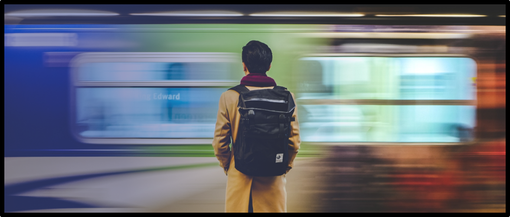

For a connected midwest
All Aboard Ohio is a 501-C3 non-profit, member-based organization dedicated to promoting more and better intercity passenger rail service and public transit throughout the state.
MAKE IT REAL
Join our growing membership of citizens just like you. We support the innovation and development of a balanced transportation system that provides viable mobility choices to all Ohioans.
CURRENT PROJECTS
We advocate for more and better transportation choices in Ohio, including more passenger trains and improved multi-modal transportation connectivity.
MEETINGS & EVENTS
We advocate for more and better transportation choices in Ohio, including more passenger trains and improved multi-modal transportation connectivity. Join one of our local chapters or a statewide meeting.